교통기사 (2009-05-10 기출문제)
1과목: 교통계획
1. 다음 4단계 교통 수요 추정법의 단계 중 추정된 장래 존간 통행량을 기존 교통망에 부하시킴으로서 기존 교통 체계의 문제를 진단하고 여러 가지 교통체계 대안을 검증할 수 있는 단계는?
- 희망노선도(Desire line) 작성 단계
- 통행발생(Trip generation) 단계
- 교통수단선택(Modal split) 단계
- 통행배분(Trip assignment) 단계
(정답률: 93%)

2. A존과 B존을 연결하는 경로 1, 2가 있다. 각각의 통행저항함수가 아래와 같고, A존에서 B존으로의 총 통행량이 2000 통행일 때, 이용자 최적상태에서의 경로별 통행량(X1, X2)은 얼마인가?
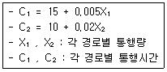
- X1=1000, X2=1000
- X1=1200, X2=800
- X1=1400, X2=600
- X1=1600, X2=400
(정답률: 알수없음)
3. 수요곡선이 통행비용 증가에 따라 직선으로 감소하는 어떤 교통시설이 개선되었다. 개선 이전의 통행비용을 C1, 개선후의 통행비용을 C2, 개선 이전의 통행량을 Q1, 개선 후의 통행량을 Q2라고 할 때, 시설 개선으로 발생된 소비자잉여 측면의 편익은 어떻게 계산되는가?
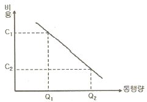
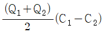
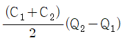
- ⅠC1Q1-C2Q2Ⅰ
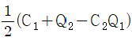
(정답률: 93%)
4. 도심의 교통수요 억제 정책으로 적합하지 않은 것은?
- 대중교통수단 육성
- 자가용 통행 금지구역 확대
- 보행자 통행 금지구역 건설
- 도심 주차장 건설
(정답률: 82%)
5. 통행 유출ㆍ유입량이 같지 않고 총 통행량만 제약하는 중력모형은?
- 제약없는 중력모형
- 단일제약 중력모형
- 이중제약 중력모형
- 평균제약 중력모형
(정답률: 82%)
6. 조사지역 내에 하나 또는 몇 개의 선을 그러 이 선을 통과하는 차량을 조사하여 표본 0-D조사에 의한 전수화 0-D자료를 검증하거나 보완하기 위해 실시하는 조사는?
- 스크린 라인 조사(Screen Line Survey)
- 폐쇄선 조사(Cordon Line Survey)
- 노측면접조사(Road Side Interview Survey)
- 가구 방문 조사(Home Interview Survey)
(정답률: 86%)
7. 요금수준, 서비스의 질과 양 등 교통체계의 변수 변화에 따른 승객 교통량을 상대적으로 추정할 수 있는 개략적인 측정 수단으로서 보편적으로 널리 이용되고 있는 방법은?
- 공금탄력성법
- 수요탄력성법
- 공급형평성법
- 승객편리성법
(정답률: 93%)
8. 교통계획의 경제성 분석 방법 중 편익ㆍ비용비(B/C ratio)방법의 장점으로 거리가 먼 것은?
- 이해하기 쉽다.
- 사업의 규모를 고려할 수 있다.
- 할인율을 모르더라도 사업의 수익성을 측정할 수 있다.
- 편익ㆍ비용이 발생하는 시간에 대한 고려가 가능하다.
(정답률: 91%)
9. 장기교통계획과 다른 TSM의 특징에 대한 설명이 가장 옳은 것은?
- 성장시나리오와 통행예측에 의존하는 문제점이 있다.
- 주로 소구역이나 노선축보다는 교통축 또는 광역적인 지역에 적용한다.
- TSM으로 인해 빠른 반응이 나타나는 것을 추구한다.
- 다양한 교통수단, 도로망, 선형대안을 갖는다.
(정답률: 알수없음)
10. 다음의 대중교통 요금구조 중 장거리 승객을 위하여 단거리 승객이 추가로 비용을 부담하는 특성이 있으며 도시확산을 간접적으로 유도할 수 있는 등의 단점을 가지고 있는 것은?
- 거리요금제
- 구간요금제
- 균일요금제
- 시간비례제
(정답률: 84%)
11. 4단게 수요 추정법의 통행분포(trio distribution) 단계에서 사용하는 아래 모형에 대한 설명이 옳지 않은 것은?
- 성장률법(growth factor model) : 존간 통행비용을 고려하지 않으며, 존의 구획에 따른 제약을 크게 받는다.
- 중력모형(gravity model) : 존별 통행 유입량과 유출량을 만족시키면서 통행비용이 최대가 되도록 배분한다.
- 간섭기회모형(intervening opportunity model) : 통행자가 목적지를 선택할 확률을 이용한다.
- 엔트로피극대화모형(entropy maximization model) : 존별 통행유출ㆍ입량을 만족시키며 엔트로피를 극대화하는 통행을 배분한다.
(정답률: 90%)
12. 통행실태조사 기법 중 차량 번호판(License Plate) 조사에 관한 설명으로 옳은 것은?
- 조사가 필요한 지역이 넓은 경우에 우편설문조사보다 적절한 방법이다.
- 조사 지점들 사이의 거리를 가능한 멀리하여야 보다 정확한 기ㆍ종점 정보의 수집이 가능하다.
- 차량을 정지시켜야 하기 때문에 안전상의 위험이 많다.
- 각 차량이 처음 관측된 곳을 기점으로, 마지막으로 관측된 곳을 종점으로 간주한다.
(정답률: 100%)
13. 다음 중 보행자 시설의 보행교통량-보행속도-보행밀도의 관계식으로 적합한 것은? (단, V : 보행교통류율(인/분/m), S : 보행속도(m/분), D : 보행밀도(인/m2), M : 보행점유공간(m2/인))
- V=S×D
- V=S÷D
- V=S×M
- V=M÷S
(정답률: 85%)
14. 다음 중 일반적인 도시교통의 특성에 대한 설명이 옳지 않은 것은?
- 대량수송을 필요로 한다ㅑ.
- 도심과 같은 특정지역에 통행이 집중된다.
- 도시 내 각 지점(출발지와 목적지)을 연결해 주는 장거리 교통이 대부분이다.
- 통행로, 교통수단, 터미널 등에 의해서 승객에게 서비스를 제공한다.
(정답률: 75%)
15. 다음 중 교통의 분류와 그 특성에 대한 설명으로 옳지 않은 것은?
- 교통을 크게 공간과 수단으로 구분할 때, 공간적 분류는 교통이 일어나는 지역적 규모에 따라 분류한다.
- 공간적 분류에 의한 지역교통은 도시 내 교통의 효율성 증진을 목표로 도시 경제활동을 위한 교통 서비스로서 단거리 이동이 많은 특성을 갖는다.
- 지구교통은 안전하고 쾌적한 보행자 공간의 확보와 대중교통체계의 접근성 확보를 목표로 하여, 근린지구의 교통을 처리하는 특성을 갖는다.
- 교통수단을 유형별로 분류하는 방법으로 개인교통수단, 대중교통수단, 화물교통수단, 보행교통수단 등 다양한 분류가 가능하다.
(정답률: 77%)
16. 장래에 발생하는 비용과 편익을 인플레이션을 고려하여 현재가치로 환산하기 위한 자본의 이자율을 의미하는 것은?
- 할인율
- 비용ㆍ편익비
- 내부수익률
- 초기년도수익률
(정답률: 64%)
17. 도로의 구조ㆍ시설 기준에 관한 규칙에 따른 일반도로의 기능별 구분 중 전국 도로망의 주 골격을 형성하며, 도로법에 따른 도로의 종류 중 일반국도, 특별시도ㆍ광역시도에 상응하는 것은?
- 주간선도로
- 집산도로
- 국지도로
- 보조간선도로
(정답률: 100%)
18. 승용차, 버스, 지하철의 효용함수가 각각 -1.0, -1.5, -1.5일 때, 로짓모형에 의한 승용차의 선택확률은?
- 약 27.4%
- 약 42.1%
- 약 45.2%
- 약 52.1%
(정답률: 알수없음)
19. 다음은 대중교통수단에 대한 여러 가지 비용을 설명한 것이다. 그림에서 ①, ②, ③이 설명하는 내용이 옳은 것은?
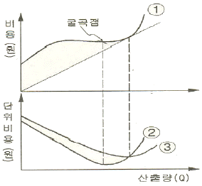
- ①:총비용 ②:한계비용 ③:평균비용
- ①:총비용 ②:평균비용 ③:한계비용
- ①:평균비용 ②:총비용 ③:한계비용
- ①:평균비용 ②:한계비용 ③:총비용
(정답률: 91%)
20. 4단계 교통 수요 추정의 통행배분(Trip assignment)단계에서 사용되는 기법이 아닌 것은?
- 카테고리분석법
- 전량배분법
- 용량제약법
- 다경로배분법
(정답률: 알수없음)
2과목: 교통공학
21. 다음 중 도로의 구조ㆍ시설 기준에 관한 규칙에 의한 설계기준자동차의 구분에 해당되지 않는 것은?
- 승용자동차
- 중형자동차
- 대형자동차
- 세미트레일러
(정답률: 84%)
22. 다음 중 평면교차로에서 도류화의 목적과 거리가 먼 것은?
- 도로주차공간확보
- 차량속도조절
- 불법회전방지
- 보행자보호
(정답률: 85%)
23. 신호교차로의 이상적인 조건(기준)에 해당되지 않는 것은?
- 100% 승용차로 구성된 교통류
- 차로 폭 3m 이상
- 접근로 정지선의 상류부 75m 이내에 노상주차시설 없음
- 접근로 정지선의 상류부 50m 이내에 버스정류장 없음
(정답률: 80%)
24. 어느 교차로의 한 접근로의 지체도 조사결과가 아래 표와 같다. 신호주기가 130초, 조사단위시간이 16초일 때, 접근차량당 평균정지지체는 얼마인가? (단, 같은 조사시간의 총 교통량은 95대이다.)
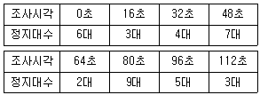
- 6.6초/대
- 9.1초/대
- 12.3초/대
- 13.5초/대
(정답률: 59%)
25. 어떤 차량이 그림에서의 속도로 각 구간을 주행하였을 때, 전체 구간에 대한 공간평균속도는?
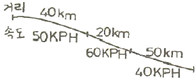
- 약 50.13km/h
- 약 47.27km/h
- 약 46.15km/h
- 약 43.25km/h
(정답률: 알수없음)
26. Webster 방식에 따른 다음 교차로의 적정주기는?
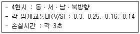
- 130초
- 140초
- 150초
- 160초
(정답률: 50%)
27. 다음 중 감응식 신호기(Traffic Actuated Signal)에 비해 고정식 신호기(Pretimed Signal)가 갖는장점에 해당되지 않는 것은?
- 보행자 교통량이 일정하면서 많은 곳에는 감응식 신호기보다 고정식 신호가 좋다.
- 구조가 간단하고 설치비용이 저렴한 편이다.
- 인접한 교차로간의 연동이 용이하다.
- 교통량의 시간대별 변동이 클 경우 대응이 용이하다.
(정답률: 알수없음)
28. 다음 중 추종이론에 관한 설명으로 옳지 않은 것은?
- 반응시간은 운전자의 민감도에 의해 결정된다.
- 고속도로에서 후미차량이 앞 차량과 유사한 움직임을 보이는 것을 설명하는데 활용될 수 있다.
- 민감도가 지나치게 크면 교통류의 불안요소가 커지는 것이 일반적이다.
- 추종이론은 거시적 관점에서 차량의 움직임을 설명하는 교통류 이론이다.
(정답률: 90%)
29. 도로의 일정지점을 통과하는 차량을 15초 단위로 분석한 결과 평균이 1.7대, 분산이 1.8대이었다. 해당 지점을 통과하는 차량이 2대 이하로 도착할 확률은?
- 약 71.2%
- 약 73.5%
- 약 75.7%
- 약 77.1%
(정답률: 34%)
30. 신호교차로 접근로의 회전교통류의 조건이 다음과 같을 때 교통량과 용량의 비(V/c)를 바르게 산정한 것은?
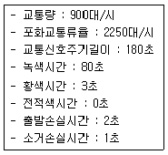
- 0.75
- 0.80
- 0.85
- 0.90
(정답률: 60%)
31. 설계속도가 120km/h이고 경사가 하향으로 4%인 도로구간에서의 최소정지거리는 얼마인가? (단, 지각반응시간 : 2.5초, 중력가속도 : 9.8m/sec2, 타이어와 노면의 마찰계수 : 0.26)
- 약 223m
- 약 341m
- 약 257m
- 약 418m
(정답률: 50%)
32. 15분 단위로 조사된 교통량이 각각 250(대/15분), 210(대/15분), 240(대/15분), 260(대/15분)일 경우 첨두시간보정계수(PHF)는?
- 0.96
- 0.92
- 0.90
- 0.88
(정답률: 90%)
33. 다음 중 교통신호 운영의 장점으로 가장 거리가 먼 것은?
- 질서 있는 교통류의 이동이 가능하다.
- 교통신호의 적절한 배치와 관리를 통해 교차로의 용량을 증대시킬 수 있다.
- 교통사고 유형 중 추돌사고가 감소된다.
- 인접교차로를 연동시켜 일정한 속도로 긴 구간을 연속 진행시킬 수 있다.
(정답률: 100%)
34. 교통량(q)과 속도(u) 및 밀도(R)의 상관관계 (q=u×R)d에서 속도의 의미는?
- 공간평균속도
- 시간평균속도
- 지점속도
- 설계속도
(정답률: 92%)
35. 다음 중 접근지체(approach delay)를 구성하는 요소로 분류되지 않는 지체는?
- 정지지체(stopped delay)
- 가속지체(accelerarion delay)
- 감속지체(deceleration delay)
- 대기행렬지체(queue delay)
(정답률: 85%)
36. 차량의 속도가 50km/h이고 교차로 폭이 20m인 도로에서의 적정 황색 시간은? (단, 차량의 감속도 : 4.5m/sec2, 차량길이 : 5m, 운전자 반응시간 : 1.5초)
- 약 4.84초
- 약 5.84초
- 약 8.⑤초
- 약 9.⑤초
(정답률: 알수없음)
37. 교통류의 특성에 대한 다음 설명 중 옳은 것은?
- 임의의 교통량에 대응하는 밀도는 하나만 존재한다.
- 임의의 교통량에 대응하는 속도는 하나만 존재한다.
- 임의의 속도에 대응하는 밀도는 하나만 존재한다.
- 밀도가 높으면 교통량은 커진다.
(정답률: 74%)
38. 도시부 간선도로(신호교차로로 구성)의 시공도(time-space diagram)로부터 일반적으로 확인할 수 없는 사항은?
- 차량진행대폭(bandwidth)
- 차량통행시간(travel time)
- 옵셋(offset)
- 개별 차량의 자유속도(free-flow speed)
(정답률: 84%)
39. 외부자극에 대한 인간의 인지반응과정이 옳은 것은?
- 지각→식별→판단→반응
- 식별→지각→판단→반응
- 판단→식별→지각→반응
- 식별→지각→반응→판단
(정답률: 73%)
40. 도로시설과 해당 도로시설의 서비스 수준을 책정하기 위해 사용하는 효과척도의 연결이 옳지 않은 것은?
- 고속도로 엇갈림 구간-주행속도
- 신호교차로-평균제어지체
- 2차로도로-총지체율
- 디차로도로-평균통행속도
(정답률: 알수없음)
3과목: 교통시설
41. 평면교차로에서의 도류화 설계를 위한 기본 원칙에 대한 설명 중 옳지 않은 것은?
- 회전차량의 대기장소는 직진교통으로부터 잘 보이는 곳에 위치해야 한다.
- 운전자의 인지성 확보를 위해 교통섬 내에 식수 등을 하도록 한다.
- 필요 이상의 교통섬을 설치하는 것은 피해야 하며, 원칙적으로 도류화가 필요하더라도 좁은 면적에서는 이를 피해야 한다.
- 운전자에게 90°이상 회전하거나 갑작스럽고 급격한 배향곡선 등의 부자연스런 경로를 주어서는 안 된다.
(정답률: 100%)
42. 노면표시에 사용되는 색상의 설명으로 옳은 것은?
- 황색 : 반대방향의 교통류 분리
- 흰색 : 교통섬의 윤곽선, 도로변의 정차금지표시
- 녹색 : 동일방향의 교통류 분리
- 적색 : 주로 규제를 뜻하며, 반대 노면의 분리
(정답률: 92%)
43. 다음 중 자전거도로에 대한 설명으로 옳지 않은 것은?
- 자전거도로는 자전거전용도로, 자전거ㆍ보행자 겸용도로, 자전거ㆍ자동차 겸용도로 등으로 구분된다.
- 자전거와 보행자의 분리 판단기준은 자전거교통량이 80대/시(약 700대/일)이다.
- 자전거도로의 포장면은 교차로와의 사이에 턱이 없게 설치하고, 접속경사는 15% 이상이 되도록 설치한다.
- 자전거ㆍ자동차 겸용도로는 자전거 외에 자동차도 일시 통행할 수 있도록 차도에 노면표시로 구분하여 설치된 자전거도로다.
(정답률: 알수없음)
44. 도로의 구조ㆍ시설 기준에 관한 규칙상 설계속도가 120km/h이고 도로의 교각이 5° 이상인 경우 평면곡선의 최소 길이는?
- 140m
- 120m
- 10m
- 60m
(정답률: 72%)
45. 곡선도로에 설치되는 완화곡선의 종류 중, 일반적으로 이용되는 클로소이드 곡선의 기본식이 옳은 것은? (단, A : 클로소이드 파라미터, L : 클로소이드 곡선의 길이, R : 곡선반경)
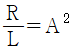
- R+L=A2
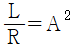
- RㆍL=A2
(정답률: 77%)
46. 다음 중 지방도에 해당되지 않는 것은?
- 도청 소재지에서 시청 또는 군청 소재지에 이르는 도로
- 간선 또는 보조간선 기능 등을 수행하는 도로
- 도내의 비행장, 항만, 역에서 이들과 밀접한 관계가 있는 고속국도, 국도 또는 지방도를 연결하는 도로
- 도내의 비행장, 항만, 역 또는 이들과 밀접한 관계가 있는 비행장, 항만 또는 역을 서로 연결하는 도로
(정답률: 알수없음)
47. 지방지역의 고속도로에 설치되는 중앙분리대의 최소 폭 기준은? (단, 자동차 전용도로의 경우는 고려하지 않음)
- 1.0m
- 1.5m
- 2.0m
- 3.0m
(정답률: 77%)
48. 다음 주차형식에 대한 설명 중 옳지 않은 것은?
- 평행주차는 주차장의 길이가 길어지는 단점이 있다.
- 30° 전진주차는 차로 진행 방향으로 긴 주차폭이 필요하다.
- 90° 각도주차는 1대당 주차소요 면적이 작다.
- 평행주차는 측방의 주차면을 병렬로 이용하여 각도주차보다 주차용량을 증대시킬 수 있다.
(정답률: 알수없음)
49. 어느 고속도로 구간의 10년 후 예상 AADT는 70,000대/일이다. 이 도로구간의 K계수는 0.08, 중방향계수는 0.65, PHF는 0.95이다 차로당 용량을 2,000vph, 계획서비스수준의 v/c비를 0.75로 가정할 때 일방향 차로수는?
- 1차로
- 3차로
- 5차로
- 7차로
(정답률: 87%)
50. 다음 중 도로의 구조ㆍ시설 기준에 관한 규칙에 따른 계획교통량(AADT)의 단위는 무엇인가?
- vph
- pcph
- pcphg
- vpd
(정답률: 58%)
51. 다음 중 4지 교차 인터체인지의 종류에 대한 설명으로 가장 거리가 먼 것은?
- 클로버형은 4지 교차로서 평면교차를 포함하지 않는 완전 입체교차형의 기본형으로 기하학적으로 대칭이다.
- 부분클로버형의 설계시 우회전 교통량의 진입과 진출은 연결로에 의해 처리하도록 고려해야 한다.
- 직결형은 직진교통을 목적으로 하는 방향으로 원활한 직선으로 처리할 수 있고 엇갈림 현상이 없다.
- 다이아몬드형은 4지 교차를 하는 불완전 입체교차의 대표적 형태이다.
(정답률: 59%)
52. 다음 중 시선유도시설에 속하지 않는 시설은?
- 시선유도표지
- 시선유도봉
- 갈매기표지
- 도로반사경
(정답률: 84%)
53. 횡단보도육교의 구조 및 설치기준에 대한 다음 설명 중 옳지 않은 것은?
- 1분당 보행자수가 80인 미만일 때 최소폭은 1.5m이다.
- 계단인 경우 경사도는 50%(높이/밑변) 이하이어야 한다.
- 보도교육의 높이가 2m를 초과하는 경우에는 계단참을 설치하여야 한다.
- 보도육고의 양옆에는 높이 1m 이상의 난간을 설치하여야 한다.
(정답률: 67%)
54. 다음 중 도로의 선형설계시 고려할 사항으로 옳지 않은 것은?
- 운전자의 시각 및 심리적 측면에서 보아 양호한 것이어야 한다.
- 도로환경 및 주위의 경관과 조화를 이루게 한다.
- 평면선형과 종단선형은 가급적 별개로 설계한다.
- 자동차의 주행면에서 안전하고 쾌적하며 운전경비면에서 경제적인 타당성을 갖추도록 한다.
(정답률: 92%)
55. 다음 중 과속방지시설이 설치장소 및 설치기준에 관한 설명이 옳지 않은 것은?
- 학교 앞, 어린이 보호구역 등 차량의 통행속도를 저속으로 규제할 필요가 있는 구간에 설치한다.
- 보ㆍ차도의 구분이 없는 도로 중 보행자가 많아 교통사고의 위험이 있다고 판단되는 도로에 설치한다.
- 도로의 굴곡부나 곡선반경이 적은 곳, 또는 시거가 불량한 교차로 등에 설치한다.
- 연속형 과속방지시설은 20~90m의 간격으로 설치하는 것이 바람직하다.
(정답률: 67%)
56. 도시지역의 일반도로에 주정차대를 설치하는 경우 그 폭은 최소 얼마 이상이 되도록 하여야 하는가? (단, 도로의 구조ㆍ시설 기준에 관한 규칙에 따르며, 소형자동차를 대상으로 하는 주정차대의 경우는 고려하지 않음)
- 3.0m
- 2.5m
- 2.0m
- 1.5m
(정답률: 82%)
57. 도로의 구조ㆍ시설 기준에 관한 규칙상 설계속도가 100km/h이고 적용 최대 편경사가 6%인 차도의 평면곡선 반지름은 최소 얼마 이상으로 하여야 하는가?
- 530m
- 460m
- 440m
- 420m
(정답률: 알수없음)
58. 설계속도가 60km/h인 도로의 곡선부를 설계하고자 한다. 이 때 횡방향마찰계수가 0.4, 편경사가 6%일 때 안전하게 주행할 수 있는 최소곡선반경은 약 얼마로 하여야 하는가?
- 62m
- 67m
- 72m
- 77m
(정답률: 알수없음)
59. 노면이 시멘트 포장도로인 차도의 횡단경사 기준은?
- 1.0%이상~1.5%이하
- 1.5%이상~2.0%이하
- 2.0%이상~2.5%이하
- 2.5%이상~3.0%이하
(정답률: 93%)
60. 도로의 설계속도에 대한 설명으로 옳지 않은 것은?
- 설계속도는 도로의 기하구조를 결정하는데 기본이 되는 속도이다.
- 곡선반경, 편경사, 시거와 같은 선형요소는 설계속도와 별로 관련이 없다.
- 설계속도란 차량의 주행에 영향을 미치는 도로의 물리적 형상을 상호 관련시키기 위해 정해진 속도다.
- 도로의 구조ㆍ시설 기준에 관한 규칙상 도시지역 고속도로의 설계속도는 100km/h 이상이다.
(정답률: 93%)
4과목: 도시계획개론
61. 근린생활권의 위계를 작은 단위에서 큰 단위로 알맞게 배열한 것은?
- 근린분구→근린주구→인보구
- 인보구→근린분구→근린주구
- 근린주구→근린분구→인보구
- 인보구→근린주구→근린분구
(정답률: 60%)
62. C. A. Perry의 근린주구에 대한 설명 중 옳지 않은 것은?
- 근린주구의 규모는 대체로 하나의 초등학교가 필요한 정도의 인구에 대응하는 규모를 갖도록 한다.
- 근린주구는 충분한 간선도로에 의해 구획되는 경계를 갖고 통과교통이 통과하지 않고 우회할 수 있도록 한다.
- 오픈스페이스는 각 근린주구의 요구에 부합되도록 소공원과 레크레이션 공간체계를 가지도록 한다.
- 서비스 공간을 갖는 학교와 기타 공공시설은 단지의 외곽에 위치시킨다.
(정답률: 70%)
63. 다음 중 우리나라 공간계획의 체계를 상위계획에서 하위계획의 순으로 옳게 나열한 것은?
- 도시계획→지역계획→국토계획→단지계획
- 국토계획→지역계획→도시계획→단지계획
- 국토계획→도시계획→단지계획→지역계획
- 지역계획→국토계획→도시계획→단지계획
(정답률: 알수없음)
64. 다음 중 성장극(growth pole)이라는 용어를 사용하고 거점개발이론을 경제적 차원에서 다루어 체계화한 사람은?
- P. Wolf
- F. C. Perroux
- B. Berry
- C. Stein
(정답률: 알수없음)
65. 소득분배 상태를 나타내는 지표로서의 지니계수(Gini coefficient) 중 가장 안전한 균등분배상황을 나타내는 수치는?
- 0.5
- 0
- 1
- -1
(정답률: 67%)
66. 1958년 네덜란드의 헤이그에서 열린 도시재개발에 관한 제1회 국제세미나에서 광의의 개념으로 도시재개발을 3가지로 분류한 내용이 올바르게 구분된 것은?
- rehabilitation, restoration, redevelopment
- redevelopment, rehabilitation, conservation
- preservation, restoration, reconstruction
- conservation, preservation, rehabilitation
(정답률: 47%)
67. 격자형 가로망에 관한 설명 중 옳지 않은 것은?
- 고대 및 중세 봉건도시에서 흔히 볼 수 있다.
- 지형이 평탄한 도시에 적합하다.
- 도로기능이 다양성이 결여되어 있다.
- 교통의 흐름이 도심으로 집중하는 현상이 강하다.
(정답률: 75%)
68. 공원ㆍ녹지체계의 유형 중 단지 내 녹지를 한 곳으로 모르는 경우로, 녹지가 대형화됨으로써 생태적으로는 안정성이 높아지나 녹지로의 도달거리가 길어져 접근성이 낮아질 수 있는 것은?
- 집중형(集中形)
- 분산형(分散形)
- 대상형(帶狀形)
- 격자형(格子形)
(정답률: 73%)
69. 도시의 경제ㆍ사회ㆍ문화적 특성을 살려 개성있고 지속가능한 발전을 촉진하기 위하여 생태, 정보통신, 과학, 문화, 관광 등의 분야별로 특성화를 지향하는 도시계획관련 사항은?
- 도시기본계획
- 지구단위계획
- 시범도시지정
- 도시계획시설
(정답률: 82%)
70. 도시의 시설과 토지의 물리적 계획의 3대 요소 중 도시의 내ㆍ외부간, 도시 내 각 지역 간 또는 도시 중요시설 상호간의 인구와 물자유통의 체계를 뜻하는 것은?
- 배치
- 밀도
- 분산
- 동선
(정답률: 알수없음)
71. 현행 국토의 계획 및 이용에 관한 법률에서 정하는 있는 기반시설 중 공공시설에 해당하는 것은?
- 자동차정류장
- 시장
- 공공청사
- 광장
(정답률: 29%)
72. 코호트생잔법(Cohort Survival Method)에 의한 인구추정방법에 관한 내용 중 옳지 않은 것은?
- 전체 인구를 5년 간격으로 나눈 연령계층과 성별을 구분하여 연령-성별 피라미드를 만든다.
- 새로이 출산될 인구집단에 관한 것은 가임여성 인구집단에 관한 자료를 바탕으로 계산된다.
- 추정인구에 전출입인구를 곱하여 해당연도의 각각의 계층별 인구를 예측한다.
- 인구의 자연증가는 생존율과 출생률을 사회적 증가는 전입과 전출을 요인으로 하여 연령계층별 인구를 추정한다.
(정답률: 알수없음)
73. 도시공간구조에 대한 이론들 중 Burgess)의 동심원이론(concentric theory)에 관한 설명으로 옳지 않은 것은?
- 1920년대에 시카고를 사례로 발표한 논문에서 제시된 것으로 도시 내 토지이용의 생태학적 진행(ecological process) 과정을 설명하였다.
- 도시를 완출지대를 포함하여 6개의 연속적인 동심원구조로 보았다.
- 도시 내의 중심지역은 중심 상업 및 업무 기능을 담당하는 도시 내 최상위 중심지로 보았다.
- 도시의 최외곽지역은 통근자지대로 중산층 이상이 거주하는 것으로 보았다.
(정답률: 72%)
74. 다음 중 국토의 계획 및 이용에 관한 법률상 원칙적으로 관할 구역에 대한 도시기본계획의 수립권자는?
- 특별시장, 광역시장, 시장 또는 군수
- 국토행양부장관
- 중앙도시계획위원회
- 지방외회
(정답률: 알수없음)
75. 국토종합계획은 몇 년을 단위로 수립하여야 하는가?
- 5년
- 10년
- 15년
- 20년
(정답률: 알수없음)
76. 근린주구이론을 바탕으로 개발한 자동차시대의 도시(Town of Motor Age)라고 불린 곳은?
- 래드번(Radburn)
- 웰윈(Welwyn)
- 할로우(Harlow)
- 후크(Hook)
(정답률: 알수없음)
77. 다음 중 위성도시론을 주장한 학자가 아닌 것은?
- R. Unwin
- R, Whitten
- G. R. Taylor
- Le Corbusier
(정답률: 28%)
78. 도시계획시설로서 도로의 규모별 구분이 옳지 않은 것은?
- 소로 3류 : 폭 8m 미만
- 중로 3류 : 폭 12m 이상~15m 미만
- 대로 3류 : 폭 20m 이상~25m 미만
- 광로 3류 : 폭 40m 이상~50m 미만
(정답률: 50%)
79. 다음 중 공동구의 설치 목적과 거리가 먼 것은?
- 도시미관의 보호
- 방재능률의 향상
- 수자원의 보호
- 도로교통의 원활화
(정답률: 알수없음)
80. 다음 중 쾌적한 환경 조성 및 토지의 효율적 이용을 위하여 건축물 높이의 최저한도 또는 최고한도를 규제 할 필요가 있어 지정하는 용도지구는?
- 시설보호지구
- 고도지구
- 특정용도제한지구
- 리모델링지구
(정답률: 70%)
5과목: 교통관계법규
81. 다음 중 도로법의 규정에 따른 “도로의 부속물”에 해당되지 않는 것은?
- 교량 및 터널
- 지하도 또는 육고
- 공동구
- 도로표지와 고로원표
(정답률: 77%)
82. 도로교통법규상 횡단보도의 설치기준과 관련한 설명이 옳은 것은?
- 횡단보도에는 별도의 횡단보도표시와 횡단보도표지판을 설치하지 않아도 된다.
- 횡단보도를 설치하고자 하는 장소에 횡단보행자용 신호기가 설치되어 있는 경우에는 횡단보도표시를 설치하지 않아도 된다.
- 횡단보도를 설치하고자 하는 도로의 표면이 포장되지 아니하여 횡단보도표시를 할 수 없는 때에는 횡단보도 표지판을 설치하여야 한다.
- 횡단보도는 육교, 지하도 및 다른 횡단보도로부터 250m 이내에는 설치하지 아니한다.
(정답률: 알수없음)
83. 국토의 계획 및 이용에 관한 법률상의 용도지구 중 학교시설ㆍ공용시설ㆍ항만 또는 공항의 보호, 업무기능의 효율화, 항공기의 안전운항 등을 위하여 필요한 지구는?
- 풍치지구
- 미관지구
- 보존지구
- 시설보호지구
(정답률: 알수없음)
84. 도로법 시행령상 도로를 굴착하여 공작물을 신설하려는 자는 그 점용에 관한 사업계획서와 첨부서류를 매년 정해진 달 중에 제출하여야 한다. 다음 중 그 제출시기에 해당하지 않는 달은?
- 1월
- 3월
- 7월
- 10월
(정답률: 알수없음)
85. 통행하는 자동차의 종류ㆍ교통량, 그 밖의 교통 특성과 지역 여건 등에 따라 필요한 경우 회전차로의 폭과 설계 속도가 시속 40km 이하인 도시지역 차로의 폭은 최소 얼마 이상으로 할 수 있는가? (단, 도로의 구조ㆍ시설 기준에 관한 규칙에 따름)
- 2.50m
- 2.75m
- 3.50m
- 3.75m
(정답률: 73%)
86. 교통안전법상 국가 교통안전 기본계획에 포함될 사항으로 가장 거리가 먼 것은?
- 교통안전시설의 정비ㆍ확충에 관한 계획
- 육상ㆍ해상ㆍ항공교통 등 부문별 교통사고의 발생현황과 원인의 분석
- 교통안전지식의 보급 및 교통문화 향상목표
- 대중교통체계의 개선에 관한 사항
(정답률: 46%)
87. 다음 중 고속도로 및 주간선도로의 설계기준자동차는? (단, 도로의 구조ㆍ시설 기준에 관한 규칙에 따르며, 우회할 수 있는 도로가 있는 경우는 고려하지 않음)
- 소형자동차
- 중형자동차
- 대형자동차
- 세미트레일러
(정답률: 80%)
88. 도로의 관리청은 도로정비 기본계획을 몇 년 단위로 수립하여야 하는가?
- 5년
- 10년
- 15년
- 20년
(정답률: 알수없음)
89. 국토를 토지의 이용실태 및 특성, 장래의 토지 이용 방향 등을 고려하여 구분한 용도지역에 해당하지 않는 것은?
- 도시지역
- 농림지역
- 관광지역
- 자연환경보전지역
(정답률: 40%)
90. 다음 중 도로교통법상 보행자의 통행방법이 아닌 것은?
- 보행자는 보도와 차도가 구분된 도로에서는 도로공사 등으로 보도의 통행이 금지된 경우나 그 밖의 부득이한 경우를 제외하고는 언제나 보도로 통행하여야 한다.
- 보행자는 보도와 차도가 구분되지 아니한 도로에서는 도로의 우측으로만 통행하여야 한다.
- 보행자는 횡단보도를 횡단하거나 신호기 또는 경찰공무원등의 신호 또는 지시에 따라 도로를 횡단하는 경우를 제외하고 모든 차의 바로 앞이나 뒤로 횡단해서는 아니된다.
- 보행자는 횡단보도가 설치되어 있지 아니한 도로에서는 가장 짧은 거리로 횡단하여야 한다.
(정답률: 75%)
91. 다음 중 도시교통정비촉진법상 국토해양부장관이 도시교통 정비구역으로 지정할 수 있는 인구 규모 기준은? (단, 도농복합형태의 시의 경우는 고려하지 않음)
- 인구 5만명 이상의 도시
- 인구 10만명 이상의 도시
- 인구 15만명 이상의 도시
- 인구 20만명 이상의 도시
(정답률: 알수없음)
92. 도로교통법상 모든 차의 운전자가 서행하여야 하는 곳(기준 장소)에 해당하지 않는 것은?
- 교통정리가 행하여지고 있지 아니하는 교차로
- 도로가 구부러진 부근
- 비탈길의 고개마루 부근
- 가파른 비탈길의 오르막
(정답률: 알수없음)
93. 도로교통법 시행령상 차량 운행상의 안전기준이 옳지 않은 것은?
- 자동차(고속버스 운송사업용 자동차 및 화물자동차 제외)의 승차인원은 승차정원의 11할 이내
- 고속도로에서 자동차고속버스 운송사업용 자동차 및 화물자동차 제외)의 승차인원은 승차정원의 11할 이내
- 화물자동차의 적재중량은 구조 및 성능에 따르는 적재중량의 11할 이내
- 화물자동차의 적재높이는 지상으로부터 4미터의 높이이내(단, 도로구조의 보전과 통행의 안전에 지장이 없다고 인정하여 고시한 도로노선의 경우는 제외함)
(정답률: 알수없음)
94. 차도의 평면곡선부에 최대 편경사를 두어야 함에도 불구하고 편경사를 두지 아니할 수 있는 경우(기준)는?
- 설계속도가 시속 60km 이상인 도시지역의 도로에서 도로 주변과의 접근과 다른 도로와의 접속을 위하여 부득이하다고 인정되는 경우
- 설계속도가 시속 80km 이상인 지방지역의 도로에서 도로 주변과의 접근과 다른 도로와의 접속을 위하여 부득이하다고 인정되는 경우
- 설계속도가 시속 60km 이하인 도시지역의 도로에서 도로 주변과의 접근과 다른 도로와의 접속을 위하여 부득이하다고 인정되는 경우
- 설계속도가 시속 80km 이하인 지방지역의 도로에서 도로 주변과의 접근과 다른 도로와의 접속을 위하여 부득이하다고 인정되는 경우
(정답률: 알수없음)
95. 도로교통법규상 신호등의 등화의 밝기는 낮에 몇 m 앞쪽에서 식별할 수 있는 성능을 가진 것이어야 하는가?
- 150m
- 100m
- 50m
- 30m
(정답률: 47%)
96. 주차장법상 “주차전용건축물”이라 함은 건축물의 연면적 중 주차장으로 사용되는 부분의 비율이 얼마 이상인 건축물을 말하는가?
- 80% 이상
- 85% 이상
- 90% 이상
- 95% 이상
(정답률: 알수없음)
97. 주차장법에 따른 기계식주차장치의 안전기준이 옳지 않은 것은?
- 기계식주차장치출입구의 크기는 대형기계식주차장의 경우 너비 2.4m 이상, 높이 1.6m 이상으로 하여야 한다.
- 주차구획의 크기는 대형기계식주차장의 경우에는 너비 2.3m 이상, 높이 1.6m 이상, 길이 5.3m 이상으로 하여야 한다.
- 운반기의 크기는 자동차가 들어가는 바닥의 너비를 대형기계식주차장의 경우 1.85m 이상으로 하여야 한다.
- 기계식주차장치 안에서 자동차를 입출고하는 사람이 출입하는 통로의 너비는 50cm 이상, 높이는 1.6m 이상으로 하여야 한다.
(정답률: 알수없음)
98. 다음 중 도시교통정비 촉진법의 목적과 가장 거리가 먼 것은?
- 교통시설의 정비 촉진
- 교통수단과 교통체계의 효율적인 운영ㆍ관리
- 도시교통의 원활한 소통과 교통편의 증진에 이바지
- 도로의 개설, 확장 및 포장과 보전에 관한 사항 규정
(정답률: 42%)
99. 다음 중 광역도시계획의 수립을 위한 기초조사 사항으로 거리가 먼 것은?
- 주택건설 촉진계획
- 풍수해ㆍ지진 그 밖의 재해의 발생현황 및 추이
- 기후ㆍ지형ㆍ자원ㆍ생태 등 지연적 여건
- 기반시설 및 주거수준의 현황과 전망
(정답률: 50%)
100. 도시교통정비 촉진법상 교통수요관리의 시행과 관련한 아래 설명에서 ()에 해당하는 말은?
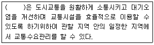
- 국무총리
- 국토해양부장관
- 시장
- 지방경찰청장
(정답률: 62%)
6과목: 교통안전
101. 도로에서 시거불량이 사고원인인 지점의 개선대책으로 적합하지 않은 것은?
- 장애물 제거
- 예고표지 설치
- 시선유도표지 설치
- 미끄럼방지 포장
(정답률: 100%)
102. 노변방호책을 동적처짐의 정도에 따라 연성, 반강성 및 강성으로 구분할 때 연성 방호책은 어떻게 구성된 것인가?
- 약한 지주와 약한 레일
- 약한 지주와 강한 레일
- 강한 지주와 강한 레일
- 강한 지주와 약한 레일
(정답률: 77%)
103. 어느 도로를 주행 중이던 차량이 급정거하면서 생긴 활주흔(skid mark)의 길이가 21m 이었을 때, 이 차량의 제동 전 초기속도는? (단, 타이어와 노면사이의 마찰계수는 0.7이며, 평탄한 구간이다.)
- 약 53km/h
- 약 61km/h
- 약 73km/h
- 약 81km/h
(정답률: 75%)
104. 다음 중 교통사고의 재현에 필요한 자료가 아닌 것은?
- 정지 및 미끄럼 흔적
- 회전시의 편주 흔적
- 사고차량의 검사 유무
- 사고차량의 최종 위치
(정답률: 92%)
1⑤. 다음 중 과속방지시설의 설치규격으로 가장 적당한 것은?
- 높이 10cm, 폭 3.6m
- 높이 15cm, 폭 3.6m
- 높이 20cm, 폭 1.5m
- 높이 30cm, 폭 1.5m
(정답률: 91%)
106. 노면방호책의 설계시 고려사항이 아닌 것은?
- 차량의 경로나 정지한 지점이 인접 차선을 침범하여도 상관없다.
- 형태를 유지하면서 차량의 감속을 최대한 유도하여야 한다.
- 차량이 관통하거나 튀어오르지 않고 차량의 방향을 수정해야 한다.
- 차량이 걸려 전도하거나 급격한 감속, 튕겨나감, 구름을 일으키지 않아야 한다.
(정답률: 85%)
107. 교통안전시설을 설치함에 있어 기본 요구조건에 해당하지 않는 것은?
- 설치 목적을 충분히 달성하여야 한다.
- 복잡해도 의미만 전달하면 된다.
- 반응을 위한 시간적인 여유를 가질 수 있는 곳에 설치 되어야 한다.
- 운전자의 주의를 끌 수 있어야 한다.
(정답률: 93%)
108. 다음 중 평균으로의 회귀효과(regression to mean effect)에 대한 설명으로 가장 거리가 먼 것은?
- 어떤 지점이 통계적인 관점에서 임의변동(random fluctuation)에 의해 사고발생 건수가 높을 때 위험지점으로 선정되었기 때문에 교통안전개선사업의 시행여부와 관계없이 다시 사고건수가 줄어들 수도 있음을 설명한다.
- 교통사고자료를 이용한 사고예측모형의 한 종류다.
- 교통안전개선사업의 효과를 평가할 때는 평균으로의 회귀효과를 감안해야 과대ㆍ과소 추정을 막을 수 있다.
- 한 지점에서의 평균 교통사고 발생빈도는 발생한 변화가 없는 한 시간의 흐름에 따라 일정한 평균을 유지하려는 경향이 있음을 설명한다.
(정답률: 82%)
109. 교통사고에 비중을 주는 일반적인 방법이 아닌 것은?
- 가장 심한 부상에 의한 비중
- 사고비용에 의한 비중
- 차량가격에 의한 비중
- 관련된 교통단위의 수에 의한 비중
(정답률: 92%)
110. 다음 중 교통사고자료의 수집시 일반적인 고려사항에 대한 설명으로 적절하지 않은 것은?
- 교통사고의 발생장소에 대한 위치정보는 X, Y 좌표를 이용하는 것보다 주소체계를 활용하여 기입하는 것이 향후 교통사고자료를 활용할 대 더욱 편리하다.
- 교통사고조사 양식은 가급적 코드화시켜 조사자에 따라 내용이 달라질 수 있는 여지를 줄이는 것이 좋다.
- 도로교통사고 조사양식은 주기적으로 그 타당성을 검토하는 것이 바람직하다.
- 도로교통사고 자료는 가급적 지리정보체계(GIS)를 통해 관리하여 향후 활용성을 높이는 것이 바람직하다.
(정답률: 91%)
111. 어느 사고다발지점에 대한 개선안 A, B, C, D를 수립하여 각 대안의 비용(PVC)과 편익(PVB)을 조사한 결과가 아래와 같을 때 가장 경제성이 좋은 개선안은? (단, 단위는 백만원이며 Incremental NPV 방법에 의한다.)
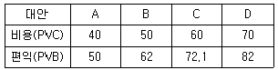
- A
- B
- C
- D
(정답률: 93%)
112. 충돌도(collision diagram)에 관한 다음 설명 중 옳지 않은 것은?
- 화살표와 기호로 사고에 관련된 사항을 도식적으로 나타낸다.
- 요구되는 예방책을 결정하기 위한 사고의 패턴을 연구하기 위한 기초자료로 사용된다.
- 충돌도는 반드시 축척에 맞추어 작성되어야 한다.
- 충돌도에는 충돌의 원인이 되는 자료와 다른 물리적인 것들이 나타나야 한다.
(정답률: 100%)
113. 다음 중 일반적으로 사고위험이 높은 장소를 선정할 때 사용하지 않는 지표는?
- 총 사고건수
- 사고율
- 사고장소의 면적
- 사고피해정도
(정답률: 92%)
114. 다음 중 도로교통안전을 위협하는 직접적인 원인으로 보기 어려운 것은?
- 도로 환경적 측면-협소한 도로폭, 도로 선형 불량 등
- 차량적 측면-엔진불량, 타이어 마모 등
- 경제적 측면-인구증가, GDP(국내총샌산) 감소 등
- 도로이용자 측면-운전 미숙, 음주 및 약물 복용 등
(정답률: 90%)
115. 다음 중 사고를 초래할 수 있는 운전자 행동으로 볼수 없는 것은?
- 법규위반(violation)
- 착오(lapses)
- 실수(errors)
- 침착(patience)
(정답률: 92%)
116. 어느 도로의 2.5km 구간의 일교통량이 3,000대이며, 이와 유사한 구간들에서의 연평균 사고율이 3.3건/백만차ㆍkm(MVK)일 때 이 구간에서의 한계사고율은? (단, 95% 신뢰수준에서의 K값은 1.645이다.)
- 약 3.29건/MVK
- 약 4.79건/MVK
- 약 5.29건/MVK
- 약 6.79건/MVK
(정답률: 알수없음)
117. 물기가 있는 도로의 주행시 노면과 타이어 사이에 얇은 수막이 생겨 주행시 브레이크 기능을 상실하게 되는 것을 무엇이라 하는가?
- 페드현상
- 스탠딩 웨이브 현상
- 라이드로 플래닝 현상
- 시미 현상
(정답률: 100%)
118. OECD가 요약한 교통안전의 진보단계 중 “모든 사고에 있어 특정 사건은 부분적으로 그에 앞선 행동 또는 환경의 결과다”라는 전제하에 도로외상을 유발하는 과정을 통하여 결정적인 선 또는 경로를 찾는 방법을 개발하고자 한 것은?
- 다원인 동적 체계접근
- 다원인 정적 체계접근
- 다원인 기회현상 접근
- 단일원인 사고경향 접근
(정답률: 알수없음)
119. 어느 차량이 주행 중 도로를 벗어나 9m 아래의 계곡으로 떨어져 도로 끝에서 수평거리 20m 인 지점에 추락하였다. 이 차량이 도로를 벗어날 때의 주행속도는 얼마인가? (단, 중력가속도 g=9.8m/sec2으로 가정한다.)
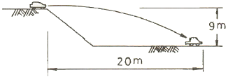
- 약 15km/h
- 약 27km/h
- 약 53km/h
- 약 75km/h
(정답률: 50%)
120. 교통사고원인을 분석하면서 교통사고는 충돌 전, 충돌 중, 충돌 후의 세 가지 사고기회의 궤도를 돌파하여야 비로소 사고로 연결된다고 주장한 사람은?
- Reason
- Rumar
- Hauer
- Haddon
(정답률: 알수없음)